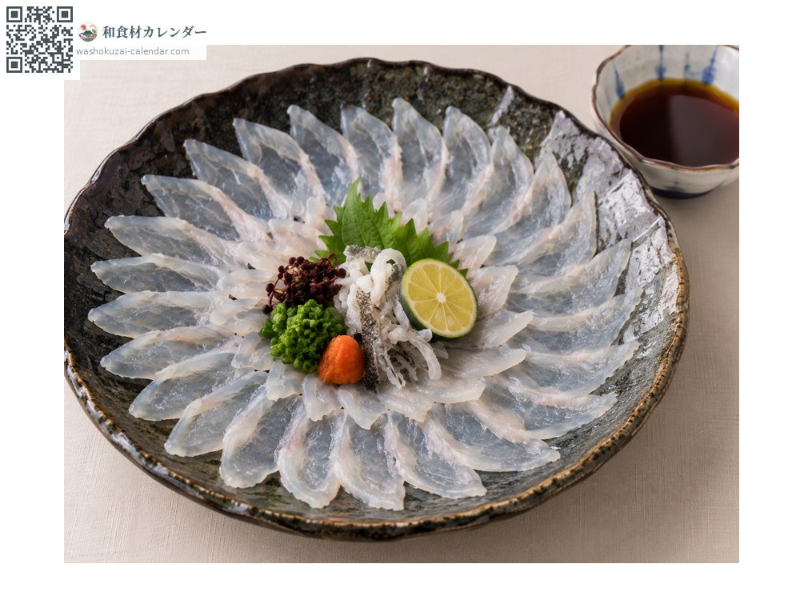
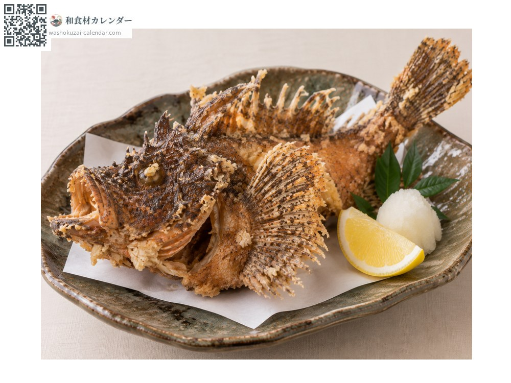
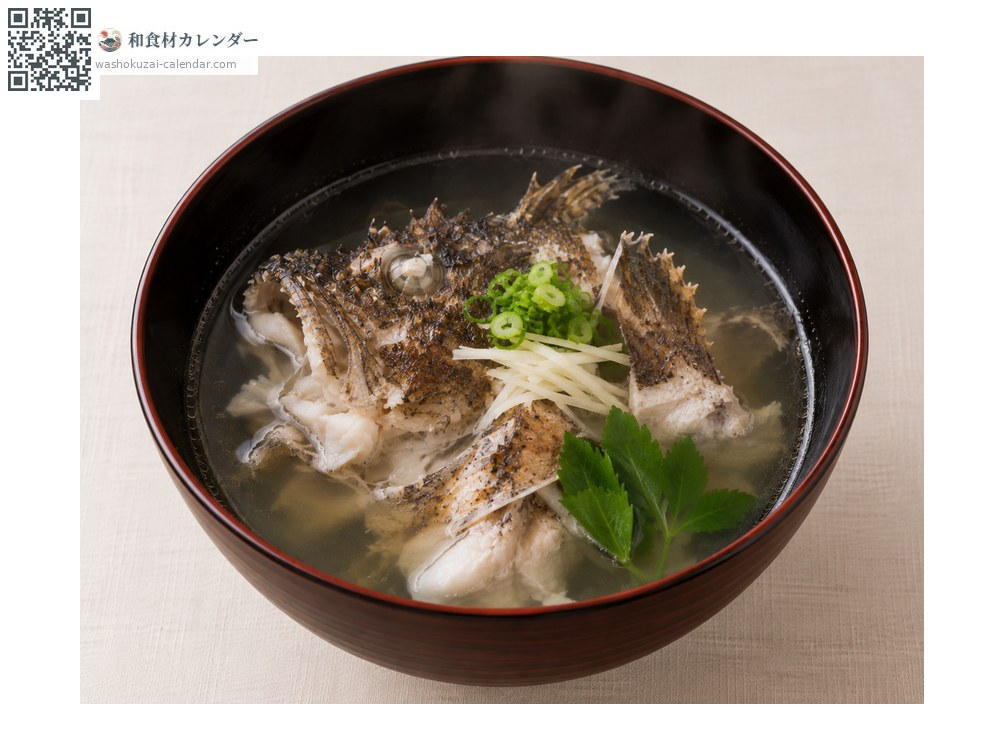
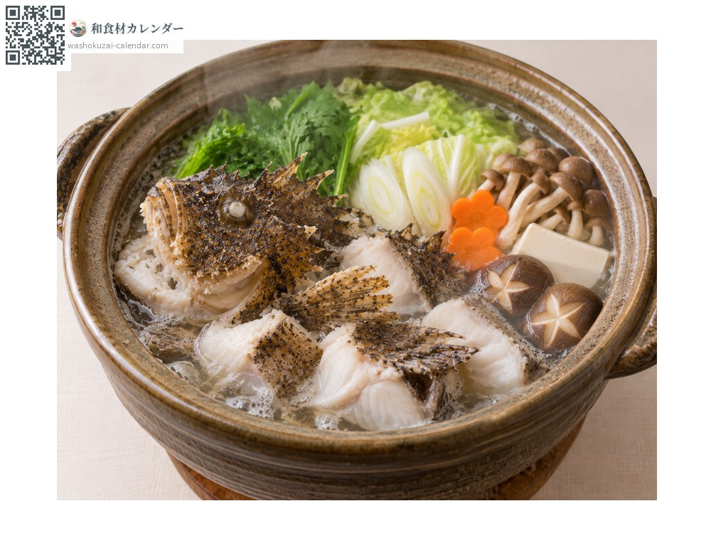

魚介
オニオコゼ
おにおこぜ
旬は6月・7月・8月・9月

旬の時期
1月
2月
3月
4月
5月
6月
7月
8月
9月
10月
11月
12月
旬出回り
調理法

刺身
透明感のある白身で弾力が強い。薄造りが向く。

唐揚げ
骨まで食べられる。二度揚げすると香ばしい。

椀物
骨から澄んだ濃い出汁が出る。肝も珍重される。

鍋
淡白な身が出汁を吸う。皮のゼラチン質も美味。
選び方
体色が鮮やかで、体に張りがあるもの。生きているものが最良。
保存方法
内臓を取って冷蔵。2日以内に使い切る。
主な産地
豆知識
背びれに強い毒棘があり、扱いには注意が必要。調理前に必ず棘を切り落とす。見た目に反して身は上品で、夏の高級魚として珍重される。皮も湯引きして食べられる。